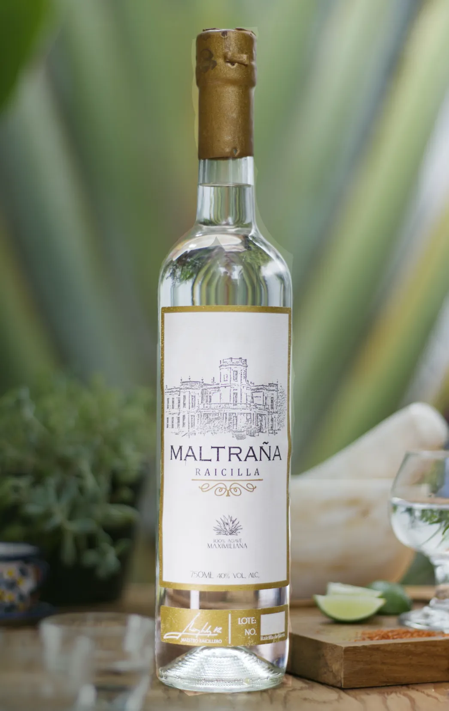
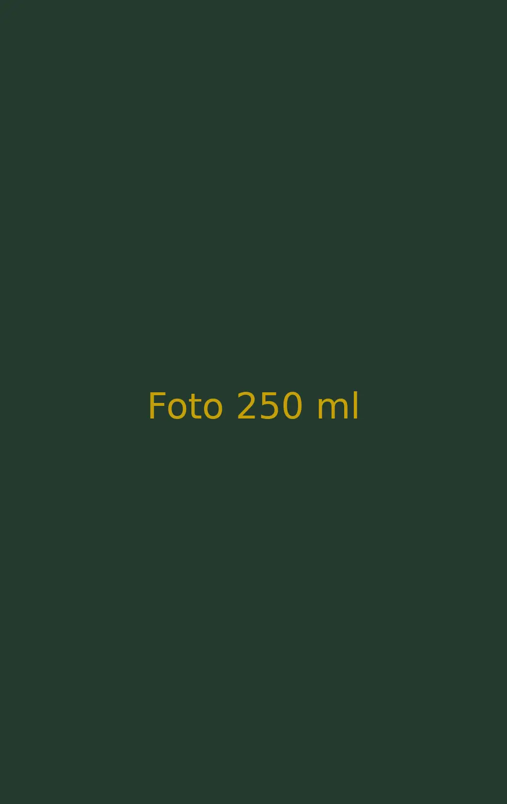
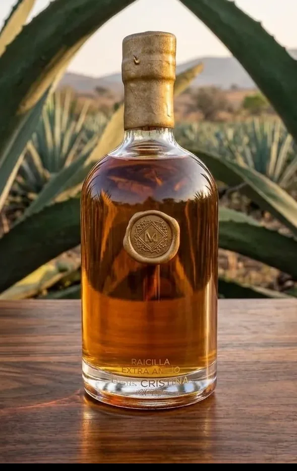

Raicillas Maltraña
Raicilla Maltraña®
Espíritu de agave de la Sierra Madre Occidental de Jalisco


Raicilla Maltraña® es un destilado de agave que honra la tradición raicillera de la sierra de Jalisco. Elaborada con agaves silvestres de la especie Agave maximiliana, de entre 12 y 16 años de edad, su proceso comienza con una cocción lenta de tres días en horno de piedra calentado con leña.
Su destilación en una sola pasada y la selección cuidadosa del corazón del destilado dan lugar a una expresión auténtica del agave, con un perfil aromático complejo, notas herbales y cítricas, matices minerales y un toque ahumado sutil. A 40% Alc. Vol., ofrece un carácter firme y equilibrado, pensado para quienes aprecian los destilados mexicanos de origen y elaboración artesanal.
- 40% Alc. Vol.
- Origen: Sierra Madre Occidental, Jalisco, México
- Agave: Agave maximiliana
- Proceso destacado: Cocción en horno de piedra con leña durante tres días, una sola destilación, estabilización durante 3 meses en cuartos oscuro.
- Vista: Transparente y brillante.
- Aroma: Agave cocido, hierbas frescas, notas cítricas y matices minerales.
- Paladar: Equilibrado, con notas herbales, un toque ahumado delicado y un final persistente.
Ideal para disfrutar sola, a pequeños sorbos, o como protagonista de una degustación. Su perfil combina especialmente bien con cocina mexicana, mariscos, ceviches, guacamole, quesos frescos y carnes al carbón.
En coctelería, sus notas herbales y cítricas ofrecen una excelente base para creaciones con limón, toronja y otros ingredientes frescos que permitan apreciar la personalidad del destilado.
Raicilla La Bella Cristina® Extra Añeja
Herencia, madera y carácter de la Sierra Madre Occidental de Jalisco

La Bella Cristina® Extra Añeja es una expresión sofisticada de la tradición raicillera de la Sierra Madre Occidental de Jalisco. Elaborada con agaves silvestres Agave maximiliana de entre 12 y 16 años de edad, su elaboración comienza con una cocción lenta de tres días en horno de piedra calentado con leña.
Su añejamiento de más de tres años en barricas de roble que previamente contuvieron vino tinto desarrolla una personalidad aromática compleja, donde las notas del agave cocido se encuentran con matices amaderados, frutales y avainillados, acompañados de un delicado fondo ahumado.
El resultado es un destilado de carácter elegante y envolvente, con una textura redonda y un perfil que invita a disfrutar cada sorbo sin prisa.
- 40% Alc. Vol.
- Origen: Sierra Madre Occidental de Jalisco, México
- Agave: Agave maximiliana
- Proceso: Cocción en horno de piedra con leña durante tres días y añejamiento superior a tres años en barricas de roble previamente utilizadas para vino tinto.
- Vista: Ámbar o marrón dorado.
- Aroma: Agave cocido, vainilla, madera, frutos maduros y delicados recuerdos de uva roja.
- Paladar: Equilibrado y envolvente, con matices de agave dulce, madera y especias, acompañado de un final persistente.
Ideal para disfrutarse sola, a pequeños sorbos, y apreciar la evolución de sus aromas. Marida especialmente bien con ate acompañado de quesos maduros, moles mexicanos, carnes al carbón, frutos secos y chocolate oscuro.
También puede aportar profundidad a cocteles de autor, como una versión de Negroni elaborada con raicilla, en la que sus matices amaderados y frutales complementen los ingredientes amargos y cítricos.